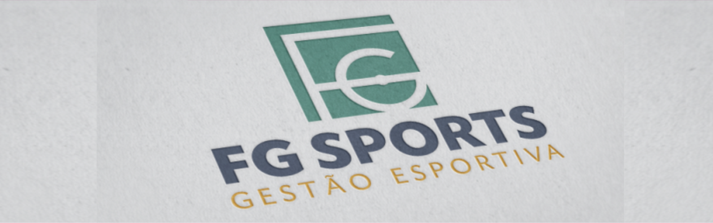
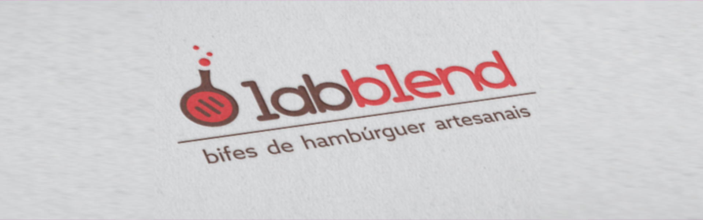
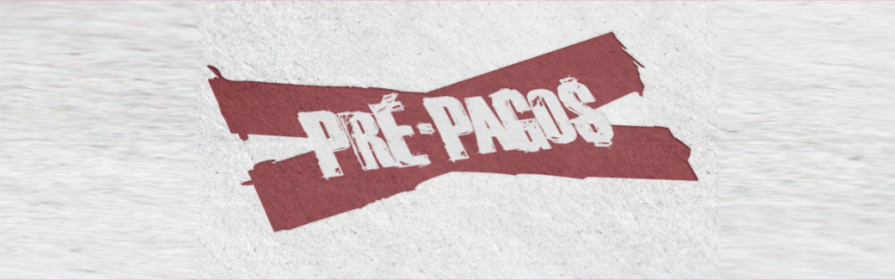
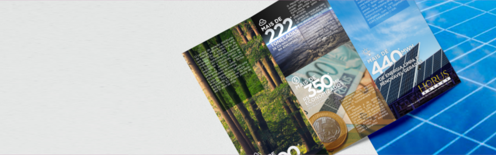
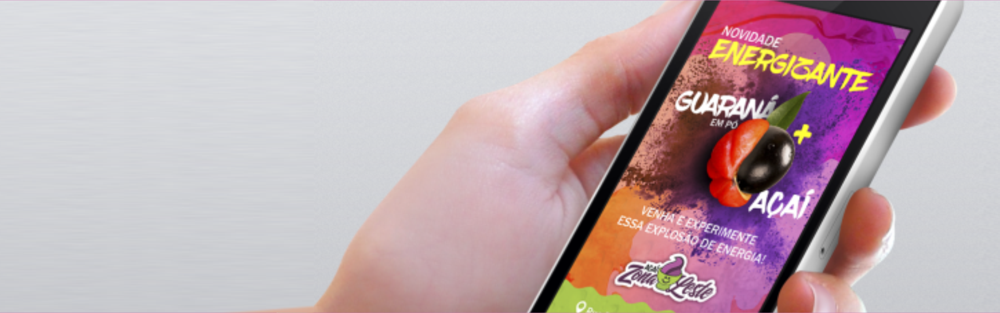
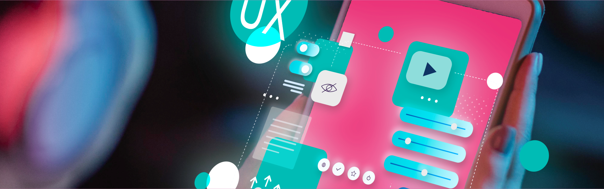

Sou formado em Comunicação Social com especialização em UX Design pela XP Educação, com mais de 18 anos de experiência em design gráfico e comunicação visual. Atuei como QA na Ubersuggest, realizando testes e sugerindo melhorias na experiência do usuário. Iniciei minha carreira em 2006 como Designer Gráfico na Universidade Presidente Antônio Carlos e fundei a CVRino Design & Criação em 2015. Tenho habilidades em gestão de projetos, relacionamento com clientes e conhecimentos em Figma, HTML, CSS, design systems, Jira, Trello e Confluence.
Sobre Guto Giordano
Sou formado em Comunicação Social com especialização em UX Design pela XP Educação, com mais de 18 anos de experiência em design gráfico e comunicação visual. Atuei como QA na Ubersuggest, realizando testes e sugerindo melhorias na experiência do usuário. Iniciei minha carreira em 2006 como Designer Gráfico na Universidade Presidente Antônio Carlos e fundei a CVRino Design & Criação em 2015. Tenho habilidades em gestão de projetos, relacionamento com clientes e conhecimentos em Figma, HTML, CSS, design systems, Jira, Trello e Confluence.
Objetivos
Meu propósito é ajudar você ou a sua empresa com boas ideias, melhorias e sugestões inteligentes. Mas calma, isso não significa que eu tenha um pacote mágico de soluções instantâneas! O que eu ofereço é um olhar criativo e estratégico para entender seus desafios e, a partir disso, desenvolver soluções funcionais e impactantes. Com experiência em design gráfico, direção de arte, conhecimentos em UX e FullStack, e sempre buscando aprender mais, meu foco é encontrar caminhos práticos e inovadores para agregar valor aos seus projetos. Se você procura alguém que pense fora da caixa e traga soluções criativas sem enrolação, podemos fazer algo incrível juntos!
Skills
UX Design | Design de Interface (UI) | Testes de Usabilidade | Prototipagem | Figma | Design System | Design Thinking | Atomic Design | Metodologias Ágeis | User Research | Jornada do Usuário | Testes E2E | Elaboração de Critérios de Aceitação | Jira | Trello | Slack | HTML | CSS | JavaScript | QA Testing | Identificação de Bugs | Gestão de Backlog | Análise de Requisitos | Documentação Técnica | Teste de Funcionalidades | Comunicação Bilíngue | Bootstrap | jQuery | SASS | Node | Git | Github | Less | Gulp | Grunt | Miro | MockFlow | Lucidchart | Story Mapping | Lean UX | Heurísticas de Nielsen | Design de Componentes | Wireframing | Photoshop | CorelDraw | Edição Básica de Vídeo | Pacote Office.
Experiências
Com uma trajetória marcada por inovação e resultados, desenvolvi projetos impactantes em design gráfico, direção de arte, UX e Fullstack. Minha paixão pela criatividade e pela experiência do usuário me levou a colaborar com equipes talentosas e a fundar a CVRino Design & Criação. Convido você a conhecer mais sobre minha trajetória e as soluções que criei ao longo dos anos, sempre buscando superar desafios e entregar excelência.
Atuação como QA, focado na qualidade de sistemas e na melhoria contínua. Estou em constante aprendizado e evolução na área, trabalhando para garantir que os produtos atendam aos mais altos padrões de qualidade. Meu objetivo é identificar e corrigir erros, além de otimizar processos e ferramentas para garantir uma experiência fluida para o usuário.
Atuação em produto SaaS internacional focado em SEO e marketing digital, conduzindo testes de qualidade e usabilidade em interface multilíngue. Colaboração direta com times de produto e desenvolvimento para garantir a melhor experiência do usuário final.
• Realização de testes end-to-end para validação de novas features, com análise crítica da jornada do usuário e identificação de pontos de atenção na interface, resultando em melhorias significativas na experiência de uso da plataforma e identificando test cases que melhor cobrem as funcionalidades desenvolvidas ou corrigidas.
• Realização de double-check em testes de outros QAs, analisando detalhadamente os cenários testados, complementando com casos de teste adicionais e identificando potenciais gaps na cobertura dos testes.
• Testes baseados em diferentes personas de usuário, mapeando comportamentos padrão e edge cases para validar respostas da plataforma em diversos cenários de uso.
• Participação ativa em cerimônias ágeis e reuniões de alinhamento com equipes de QA, produto e desenvolvimento, contribuindo com insights sobre a experiência do usuário antes da implementação de novos recursos ou após os testes.
• Elaboração de documentação bilíngue (português/inglês) de procedimentos de teste, auxiliando na padronização de processos e facilitando a replicação dos testes pela equipe global.
• Identificação e reporte detalhado de bugs e inconsistências UI/UX através do Slack, Jira ou Confluence, incluindo evidências, steps to reproduce e informações contextuais para facilitar a compreensão e resolução pela equipe de desenvolvimento ou produto.





Designer Gráfico e Direção de Arte
Tenho uma vasta experiência em gestão de estúdio de design, focando em identidade visual, anúncios e projetos gráficos. Conduzi projetos completos de identidade visual, gerenciei comunidades online, implementei metodologias de atendimento ao cliente e desenvolvi materiais impressos e digitais. Também realizei consultorias em comunicação visual, otimizei processos de design e coordenei prazos e demandas múltiplas. Além disso, atuei em comunicação visual institucional, criação de campanhas visuais e desenvolvimento de sistemas visuais para diferentes segmentos de mercado.
Gerenciei o estúdio que era focado em identidade visual, anúncios e projetos gráficos, atendendo diversos segmentos de mercado.
• Conduzi projetos completos de identidade visual, desde o briefing inicial até a entrega final, desenvolvendo manuais de marca e diretrizes de uso. • Gerenciei uma comunidade online com mais de 130 mil membros, criando conteúdo relevante e moderando interações para alto engajamento. • Implementei uma metodologia própria de atendimento ao cliente, resultando em 100% de satisfação. • Desenvolvi materiais impressos e digitais, garantindo consistência visual e adequação técnica. • Coordenei prazos e demandas múltiplas, estabelecendo cronogramas eficientes e comunicação clara. • Realizei consultorias em comunicação visual para pequenas e médias empresas, oferecendo soluções personalizadas. • Otimizei processos de design através da criação de templates e padronização de materiais, aumentando a eficiência na produção.
Acesse o Instagram ou o Site do escritório e conheça mais!
Responsável pela comunicação visual institucional e criação de peças para redes sociais, desenvolvendo materiais gráficos e contribuindo com melhorias na comunicação digital.
• Desenvolvimento de sistema visual para comunicação institucional, incluindo templates, guias de estilo e padrões de design que garantiram consistência na identidade da marca em todos os materiais. • Criação e produção de campanhas visuais para processos seletivos, eventos acadêmicos e comunicação interna, atingindo diferentes públicos através de estratégias multiplataforma. • Acompanhamento do calendário editorial de redes sociais, produzindo conteúdo visual otimizado para cada plataforma (Instagram, Facebook, LinkedIn) e aumentando o engajamento do público. • Colaboração direta com os líderes dos departamentos de Marketing e Comunicação para alinhar estratégias visuais com objetivos institucionais. • Desenvolvimento de materiais para comunicação interna, incluindo apresentações, informativos e sinalização, melhorando a disseminação de informações na instituição. • Otimização de processos de design através da criação de bibliotecas de elementos visuais e templates reutilizáveis, reduzindo o tempo de produção e mantendo a consistência.
• Desenvolvimento de sistema integrado de comunicação visual para materiais institucionais internos e externos, garantindo unidade visual e efetividade na comunicação. • Planejamento e criação de materiais promocionais para participação em feiras e eventos do setor, incluindo stands, banners e materiais impressos. • Elaboração de projetos de identidade visual alinhados às necessidades específicas do mercado industrial, com foco em aplicações técnicas e institucionais.
• Desenvolvimento e implementação de projetos completos de sinalização e wayfinding, incluindo estudo de fluxos, escolha de materiais e supervisão de produção. • Criação de sistemas visuais para frotas corporativas, considerando diferentes aplicações, durabilidade e visibilidade dos elementos gráficos. • Elaboração de manuais técnicos para aplicação de identidade visual em diferentes suportes e materiais. • Otimização do fluxo entre criação e produção através do desenvolvimento de especificações técnicas detalhadas e acompanhamento da produção.

UX Design
Minha experiência com design sempre me fez enxergar a importância da experiência do usuário. Afinal, de nada adianta um layout bonito se ele não for funcional, intuitivo e agradável de usar. Foi essa curiosidade que me levou a explorar mais sobre UX (User Experience), estudando conceitos, boas práticas e aplicando esse conhecimento em projetos.
Ainda estou aprendendo e aprimorando minhas habilidades nessa área, testando diferentes abordagens e buscando entender como pequenos detalhes podem melhorar a interação das pessoas com um produto digital.
Aqui, compartilho alguns projetos e estudos que já desenvolvi em UX. Se tiver interesse, fique à vontade para conferir e, claro, trocar ideias!
Participei da Jornada UX promovida pela EBAC – Escola Britânica de Artes Criativas & Tecnologia, uma imersão intensa de sete dias. Cada dia trazia um novo desafio, com tarefas que precisavam ser entregues até as 18h do dia seguinte. Para quem está começando, como eu, o prazo foi apertado, masssss… desafios fazem parte do aprendizado, né?
O foco do projeto foi desenvolver uma ferramenta digital para uma ONG que resgata animais abandonados, aplicando conceitos de UX Design, usabilidade e design centrado no usuário. Nosso tutor, Rodrigo Lemes, foi guiando a jornada com insights valiosos, nos instigando a pensar além da interface e considerar toda a experiência do usuário.
Esse foi meu segundo contato com UX e UI, e escolhi destacar esse projeto porque sinto que consegui desenvolver algo bem bacana. Vou compartilhar aqui o processo passo a passo, mostrando desde a pesquisa até as decisões de design.
Pesquisar e captar informações
O primeiro passo foi pesquisar sobre adoção de pets e abandono de animais, explorando o que já existe no mercado. Fiz uma busca no Google, li artigos, matérias e outros conteúdos que pudessem trazer insights sobre o tema.
Com essas informações, comecei a identificar oportunidades, certezas, suposições e muitas dúvidas sobre o que poderia ser feito. Para organizar melhor esse pensamento, utilizei um mapeamento e construí uma Matriz CSD (Certezas, Suposições e Dúvidas). Confesso que entendo quem acha que suposições e dúvidas são quase a mesma coisa! 😅
Entre os sites que analisei, um dos que mais me chamou a atenção foi o Iris. Apesar de ter aparecido entre os primeiros resultados, seu design não facilita a navegação e ele se foca apenas em adoção temporária de cães-guia, o que limita o alcance para outros tipos de adoção.
Personas
Para a criação das personas, decidi focar em três perfis principais: o usuário que quer adotar, o usuário que deseja doar e a ONG. Cada um desses perfis tem necessidades e desafios únicos, e não podemos generalizar. Com isso, entender as dores e necessidades específicas de cada um foi essencial para criar soluções mais direcionadas e eficazes.
A abordagem de persona centrada no usuário ajuda a garantir que o design atenda de fato às expectativas e aos requisitos de todos os envolvidos, proporcionando uma experiência mais personalizada e relevante.
Trabalhando o fluxo e a jornada de usuário
Essa foi, sem dúvida, uma das etapas mais desafiadoras, pois entender e trabalhar os fluxos de usuários demanda tempo e um conhecimento profundo sobre o serviço que estou oferecendo. Como sou uma pessoa bastante organizada, nunca precisei trabalhar com fluxogramas antes, então foi uma verdadeira novidade dentro da novidade. 😅
O desafio era mapear a jornada de cada persona no serviço que vou oferecer. Para isso, busquei traçar todos os fluxos de interação e como cada usuário se comportaria ao longo do processo. O resultado foi um fluxograma detalhado, que servirá de guia para otimizar a experiência de cada usuário.
Arquitetar informações
Como designer gráfico, sempre tive uma tendência natural a focar muito no lado visual das coisas – e isso é completamente normal. Quando comecei, imaginei que chegaria lá e faria apps inovadores e produtos voltados para o usuário, quase como mágica, sem muito esforço.
Mas, assim como em meus trabalhos de identidade visual e logotipos, aprendi que, na maioria das vezes, o que realmente torna o trabalho especial é o processo de pesquisa. O design não é só sobre a execução final, mas sobre entender o que o usuário precisa, e isso leva tempo e reflexão.
Muitas vezes, para criar um logotipo, comecei com rabiscos no papel, no espelho do banheiro, ou até saindo correndo pela casa para escrever ou desenhar a ideia que acabara de ter. Foi nessa etapa que percebi algo muito importante: o rabisco rápido, sem perfeição, apenas para ver se a ideia funciona, é tão importante quanto a lapidação final no computador.
Para a solução da ONG, optei por criar um site, já que ele oferece uma vantagem enorme para o usuário: não é necessário instalar nada. Isso pode facilitar muito o acesso, especialmente para quem tem dificuldades com instalação de apps, seja por desconfiança, falta de prática ou restrições de dados móveis.
E assim, criei meu protótipo de baixo custo, com uma versão inicial simples e eficaz.
Aqui está o wireframe que criei, começando pela versão mobile, já que, como sabemos, a grande maioria das pessoas acessa sites pelo celular hoje em dia.
Identidade
No curso, não foi solicitado o desenvolvimento de uma marca profissional, especialmente por conta do tempo limitado. Na verdade, nem era necessário criar um nome ou identidade visual, mas como sou designer gráfico e adoro esse aspecto, achei que seria interessante apresentar uma proposta.
Escolhi o nome PetLink, que faz a ligação entre pessoas e pets para adoção, e desenvolvi uma marca com cores vivas e animadas, transmitindo o carinho pelos animais. As cores contrastantes foram escolhidas para chamar atenção, enquanto a tipografia tem um toque divertido, refletindo a natureza amigável do projeto.
Além disso, para ajudar a aplicar essa identidade de forma consistente no site, criei um style guide ou guia de estilos. Esse documento é essencial para manter a unidade visual da marca, sem a necessidade de buscar informações em diferentes lugares, evitando ruídos e garantindo coesão.
Nos meus projetos de identidade visual, sempre entrego ao cliente um manual, ainda que mais básico, contendo fontes, cores e suas variações. Isso também não foi um desafio nesse processo.
Prototipação
Diferente de um wireframe ou de outros protótipos, este já possui uma identidade visual definida, cores, e informações corretas. No entanto, o objetivo principal dele é testar e validar funcionalidades, botões, cores e entender se o usuário está encontrando alguma dificuldade na realização das tarefas. Através dele, posso testar uma ou várias funções, fazendo ajustes ou validações conforme vou identificando pontos de melhoria.
Podem perceber que o PetLink já está bem adiantado. Embora não fosse necessário ter todos esses detalhes para realizar os testes, achei importante adicionar esse nível de elaboração. Este protótipo não é o mesmo que criei inicialmente, pois já apliquei um teste e fiz algumas alterações, que serão demonstradas, já que filmei todo o processo.
Aproveito para fazer uma observação: no primeiro projeto fictício que desenvolvi, durante o bootcamp de UX da XP Educação (antiga IGTI), criei um app de avaliação de filmes e séries. Eu o desenvolvi quase todo e fiz isso algumas vezes.
Teste de usabilidade
No desenvolvimento do PetLink, realizei testes de usabilidade com dois usuários para validar as funcionalidades do protótipo. Criei uma história que guiava o usuário por um conjunto de tarefas, e durante o processo, gravei suas interações para entender como ele reagiria além do roteiro.
Após completar as tarefas, os usuários responderam a perguntas de avaliação, com notas de 1 a 5 e uma pergunta aberta para sugestões.
Um dos testes foi assistido por mim e o outro foi feito de forma independente, sem a minha observação direta. Ambos foram eficazes, proporcionando insights valiosos para ajustes no design.
Esses testes ajudaram a identificar pontos de melhoria, como ajustes na navegação e na clareza das informações, além de confirmar a eficácia das mudanças feitas no protótipo.
Questionário
Teste filmado
Este foi o resultado de um ciclo de desenvolvimento do PetLink, com base em testes e ajustes contínuos. À medida que novas atualizações forem realizadas, vou continuar aprimorando o projeto e compartilhando os resultados.
Agradeço por ter acompanhado até aqui e fico à disposição para mais insights e melhorias!
Este protótipo foi criado como parte do meu portfólio, refletindo a forma como penso e como pretendo atuar em busca de uma colocação nas áreas de UX e UI. Não entrarei em muitos detalhes sobre o processo, como fiz no projeto anterior, para evitar que fique repetitivo. No entanto, alguns artefatos estarão disponíveis para quem quiser entender melhor as etapas.
Agradeço pela visita e espero que esse projeto tenha transmitido um pouco da minha visão e do meu trabalho!
Matriz CSD
Persona
Fluxo e jornada
Wireframe
Aqui está o protótipo de baixa fidelidade do meu app. Nesta etapa, não criei um guia de estilos separado, pois optei por seguir a identidade visual já definida no meu currículo.
Embora o processo não tenha mudado muito em relação ao outro projeto, fiz atualizações no protótipo para aprimorar a experiência do usuário. No vídeo a seguir, vocês poderão ver o protótipo funcionando e conferir as melhorias implementadas.
Prototipação
Com isso, o protótipo foi evoluindo, sempre em busca de uma melhor experiência para o usuário. A ideia é continuar refinando e ajustando conforme novas feedbacks e necessidades surgem.
Este foi meu primeiro trabalho no curso da XP Educação, e como mencionei ao falar sobre o PetLink, achei importante compartilhar pelo menos o vídeo do protótipo funcional. O StreamMe foi criado como um projeto fictício durante um curso de 3 meses, onde além da prática, tivemos aulas ao vivo e testes de avaliação. Durante o curso, aprendi a usar ferramentas como Figma e Wireframe, fundamentais para UX e UI.
Recebi também várias dicas de leitura e participei de dinâmicas, como a aplicação das Heurísticas de Nielsen, Hierarquia de Informação, Lean UX, entre outras. Uma das técnicas que mais gostei foi o Six Up, que ajuda a criar dores e soluções para o produto, colaborando com a equipe na definição das melhores estratégias e priorização das funcionalidades.
Para não deixar o texto muito extenso, vou compartilhar apenas o vídeo do protótipo do StreamMe, que eu desenvolvi quase completamente. E, como curiosidade, apliquei testes com 3 usuários, mas não filmei esse processo. Ah, e a Felícia Neves foi uma das personas desse projeto!
Este projeto foi uma grande oportunidade para aplicar os conhecimentos adquiridos ao longo do curso e colocar em prática diversas técnicas de UX. Além disso, foi fundamental entender como a pesquisa com usuários e o teste de protótipos impactam diretamente na criação de soluções mais eficazes. A experiência me permitiu aprimorar minhas habilidades em design de interfaces e em metodologias de usabilidade, consolidando o que aprendi de forma prática.
A cada projeto, o aprendizado se torna mais profundo, e estou empolgado para continuar evoluindo e aplicando essas técnicas em novos desafios.
Desenvolvimento Fullstack
Comecei minha jornada no mundo da programação por conta do Frontend, uma área que tem tudo a ver com design e criatividade — algo com o qual sempre me identifiquei. Mas, à medida que fui me aprofundando, percebi o quanto é interessante entender como tudo funciona por trás das telas. Foi aí que decidi expandir meus horizontes e começar a estudar.
Ainda estou no começo dessa jornada, aprendendo e aprimorando meus conhecimentos, mas o que me motiva é a possibilidade de criar aplicações mais completas e dinâmicas. Para praticar, decidi desenvolver este site, aplicando na prática os conceitos que venho estudando tanto no Frontend quanto no Backend.
Este é o primeiro site que desenvolvi do zero, sem depender de plataformas como WordPress. Foi um grande desafio e, ao mesmo tempo, uma oportunidade incrível para consolidar meu aprendizado em desenvolvimento Fullstack.
Para a estilização e responsividade, utilizei Bootstrap, além de explorar JavaScript para tornar a experiência mais dinâmica. Cada seção foi planejada com foco na usabilidade, garantindo uma navegação intuitiva.
Durante o desenvolvimento, aprendi muito sobre a integração entre Frontend e Backend, desde a organização do código até o planejamento da estrutura do projeto. E isso é só o começo! Ainda tenho muitas melhorias que quero implementar, como um modo escuro para acessibilidade e uma versão em inglês onde o usuário vai poder selecionar o idioma.
Esse projeto representa meu crescimento na área e continua evoluindo à medida que aprendo mais.
Se quiser conferir mais projetos ou acompanhar minha evolução, dá uma olhada no meu GitHub. Também compartilho algumas criações no Vercel, onde você pode testar as aplicações ao vivo!Se quiser conferir mais projetos ou acompanhar minha evolução, dá uma olhada no meu GitHub. Também compartilho algumas criações no Vercel, onde você pode testar as aplicações ao vivo!
A vida não se resume ao trabalho, e cada pedaço do meu caminho reflete isso. Entre aventuras, viagens e hobbies, busco criar experiências que tragam leveza e criatividade. Afinal, a vida é como uma folha em branco, cheia de possibilidades, e sou grato por poder explorar tudo o que ela tem a oferecer.
Quer saber mais? Dê uma olhada nas minhas aventuras e projetos pessoais.